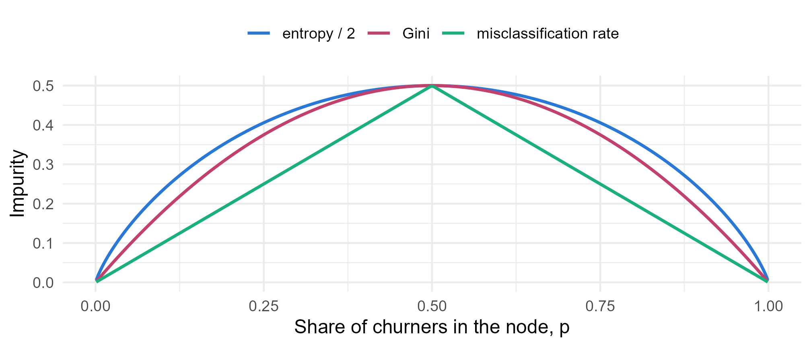
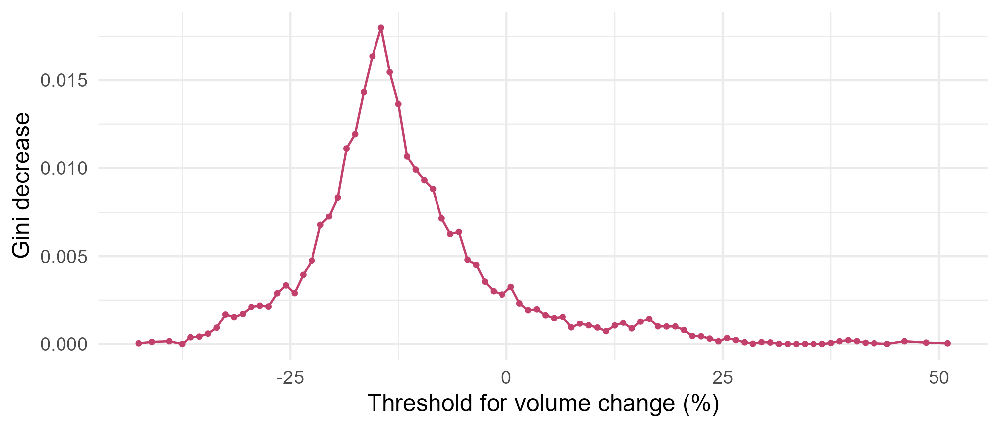

Module 8 · Lesson 2 of 13 Week 120 of 160 About 5–7 hours
How decision trees work
Ask the best question, then ask again
Grow a classification tree by hand on the customer churn data. Measure a node’s impurity with the Gini index and entropy, find the best split of one input by scanning every threshold, compare the best splits of all the inputs, and split a categorical input with the ordering trick. Then let rpart do the same, check that its numbers match yours, read the tree, and see how stopping rules decide its size.
A decision tree is a sequence of yes/no questions. “Did the account have three or more late deliveries? If so, is it in Pharma or Food?” Each answer sends an account down one branch, and at the end of the branches, the leaves, the tree makes its prediction: the churn rate of the training accounts that ended up there.
Sales managers like trees because they read like the rules of thumb they already use. Statisticians like them because they find thresholds and interactions on their own, without being told where to look. This lesson grows one by hand, so that nothing the rpart package does later is a mystery. The method is recursive partitioning, the heart of CART (classification and regression trees, Breiman, Friedman, Olshen and Stone, 1984):
- For every input, and every way of splitting it in two, measure how much the split makes the two groups purer.
- Make the best split.
- Repeat inside each group, until a stopping rule says stop.
A tree is a game of twenty questions with the data. The trick is choosing which question to ask first, and today you’ll do it by hand.
In this lesson you’ll:
- measure a node’s impurity with the Gini index and entropy
- find the best threshold for a numeric input, and the best input overall
- split a categorical input with the ordering trick
- check rpart’s first split against your own numbers
- read a tree and predict with it
- see how stopping rules control a tree’s size
Impurity
A node is pure if all its accounts have the same outcome. For a node in which a share p churned, two common measures of impurity are
\text{Gini} = 1 - p^2 - (1 - p)^2 = 2p(1 - p), \qquad \text{entropy} = -p \log_2 p - (1 - p) \log_2 (1 - p) .
Both are 0 for a pure node and largest at p = 0.5. The Gini index is the probability that two accounts drawn at random from the node have different outcomes; entropy is the information theorist’s measure of surprise, in bits.
pp <- seq(0.001, 0.999, length.out = 300)
imp <- rbind(data.frame(p = pp, v = 2 * pp * (1 - pp), m = "Gini"),
data.frame(p = pp, v = -(pp * log2(pp) + (1 - pp) * log2(1 - pp)) / 2, m = "entropy / 2"),
data.frame(p = pp, v = pmin(pp, 1 - pp), m = "misclassification rate"))
ggplot(imp, aes(p, v, color = m)) + geom_line(linewidth = 0.9) +
scale_color_manual(values = c(Gini = "#C2416C", `entropy / 2` = "#2a78d6", `misclassification rate` = "#1baf7a"), name = NULL) +
labs(x = "Share of churners in the node, p", y = "Impurity") + theme_minimal(base_size = 12) + theme(legend.position = "top")
The setup code makes Lesson 1’s partition and keeps the training set, train. It also defines y, a TRUE/FALSE vector of which training accounts churned, and the function gini().
Your turn. Compute the Gini index and the entropy of the root node: all 1,962 training accounts.
The second term uses the share that didn’t churn, 1 - p.
p <- mean(y)
c(p = p, gini = 2 * p * (1 - p), entropy = -(p * log2(p) + (1 - p) * log2(1 - p)))p = 0.198, a Gini index of 0.317 and an entropy of 0.717 bits. Every split will be judged by how much it lowers this.
The best threshold
A split sends the accounts with x < t left and the rest right. Its quality is the decrease in impurity: the parent’s impurity minus the size-weighted impurity of the two children,
\Delta = G(\text{parent}) - \Big( \tfrac{n_L}{n} G(L) + \tfrac{n_R}{n} G(R) \Big) .
Your turn. Compute the Gini decrease for the split “three or more late deliveries”, and the churn rate of the accounts that go right.
The right child’s impurity is gini(y[right]).
right <- train$late_deliveries >= 3
decrease <- gini(y) - (mean(!right) * gini(y[!right]) + mean(right) * gini(y[right]))
c(decrease = decrease, n_right = sum(right), churn_right = mean(y[right]))A decrease of 0.0456. The 255 accounts with three or more late deliveries churned at 58.8%, three times the base rate, and the other 1,707 at 13.9%. One question already separates high risk from low.
Your turn. Why three? Compute the decrease for every threshold from 0.5 to 5.5.
Use the function’s argument, t.
dec <- function(x, t) {
L <- x < t
gini(y) - (mean(L) * gini(y[L]) + mean(!L) * gini(y[!L]))
}
thresholds <- seq(0.5, 5.5, by = 1)
d <- sapply(thresholds, function(t) dec(train$late_deliveries, t))
round(d, 5)
thresholds[which.max(d)]2.5 wins, with 0.0456; the next best, 3.5 and 1.5, manage only 0.016. That’s the threshold built into the data: customers tolerate one or two late deliveries a year, and start looking elsewhere at three. A tree finds thresholds like that by brute force, and with only the values that occur in the data as candidates (midway between them), the search is cheap.
The best input
Your turn. Find the best threshold, and its decrease, for each of seven numeric inputs.
Report the largest decrease, max(d).
dec <- function(x, t) {
L <- x < t
gini(y) - (mean(L) * gini(y[L]) + mean(!L) * gini(y[!L]))
}
best <- function(x) {
u <- sort(unique(x))
th <- (head(u, -1) + tail(u, -1)) / 2
d <- sapply(th, function(t) dec(x, t))
c(threshold = th[which.max(d)], decrease = max(d))
}
inputs <- c("late_deliveries", "volume_change_pct", "price_index", "account_years", "complaints", "volume_t", "visits")
round(t(sapply(train[inputs], best)), 5)The late deliveries win easily (0.0456), then a volume drop of more than 14.5% (0.0180), a price index above 1.0465 (0.0133) and an account younger than 2.5 years (0.0128). The volume and the visits barely matter. Each best threshold is a fact the sales team can use: “a customer whose volume has dropped by 15% is a warning sign; a price 5% above the market is another”.
Here’s the search for one input, the volume change: every candidate threshold and its decrease.
u <- sort(unique(train$volume_change_pct)); th <- (head(u, -1) + tail(u, -1)) / 2
dd <- sapply(th, function(t) { L <- train$volume_change_pct < t; gini(y) - (mean(L) * gini(y[L]) + mean(!L) * gini(y[!L])) })
ggplot(data.frame(th, dd), aes(th, dd)) + geom_line(color = "#C2416C") + geom_point(color = "#C2416C", size = 0.8) +
labs(x = "Threshold for volume change (%)", y = "Gini decrease") + theme_minimal(base_size = 12)
Splitting a categorical input
A categorical input with k levels can be split into two groups in 2^{k-1} - 1 ways: 127 for the 8 segments, and about 5.8 \times 10^{17} for the 60 sales reps. For a two-class target, there’s a shortcut: order the levels by their churn rate, and only consider splits that keep that order. One of those k - 1 splits is guaranteed to be the best of all 2^{k-1} - 1.
Your turn. Order the segments by their training churn rate, and find the best of the 7 ordered splits.
The best split is at which.max(d).
rate <- tapply(y, train$segment, mean)
ordered <- names(sort(rate))
d <- sapply(1:7, function(k) {
L <- train$segment %in% ordered[1:k]
gini(y) - (mean(L) * gini(y[L]) + mean(!L) * gini(y[!L]))
})
round(d, 5)
ordered[1:which.max(d)]Pharma and Food against the rest, with a decrease of 0.0028: real, but far weaker than the late deliveries. The ordering trick is why CART can split categorical inputs quickly. It’s also a danger: with 60 sales reps, the tree can always find some grouping of reps that looks good on the training data, as Lesson 1’s logistic regression found for itself. Lesson 7 shows how badly that biases trees.
rpart does the same
Your turn. Grow a tree with a single split (maxdepth = 1) with rpart(), leaving out the sales reps and the satisfaction score for now, and compare its improve value for the first split with n \times \Delta from your calculation.
A single split: maxdepth = 1.
stump <- rpart(churned ~ . - sales_rep - satisfaction, data = train, method = "class", maxdepth = 1)
print(stump)
right <- train$late_deliveries >= 3
c(rpart_improve = stump$splits[1, "improve"],
n_times_decrease = nrow(train) * (gini(y) - (mean(!right) * gini(y[!right]) + mean(right) * gini(y[right]))))Both are 89.38: rpart chose late_deliveries < 2.5 by exactly your calculation, and reports the decrease multiplied by the node’s size. The printout reads: node 1 is the root, with 1,962 accounts, 388 of them “lost” (misclassified if the node predicts “no”), and class proportions 0.802 and 0.198. Nodes 2 and 3 are its children; a * marks a leaf.
Your turn. Let the tree grow to depth 2, and look at it.
In yval2, column 5 holds the share of the second class, “yes”.
tree2 <- rpart(churned ~ . - sales_rep - satisfaction, data = train, method = "class", maxdepth = 2)
print(tree2)
tree2$frame$yval2[tree2$frame$var == "<leaf>", 5]The tree split the high-risk branch again, by segment: of the 255 accounts with three or more late deliveries, the 58 in Food and Pharma churned at 31%, and the other 197 at 67%. The low-risk branch wasn’t split at all, because no split there improved the fit by enough to pass rpart’s default threshold (the complexity parameter, cp = 0.01, which Lesson 5 is about). So the leaves predict 13.9%, 31.0% and 67.0%. The tree has found an interaction: segment matters, but only for accounts with delivery problems. A logistic regression would only find that if someone added the interaction term.
Here it is, drawn with the rpart.plot package (each box shows the predicted class, the churn probability and the share of training accounts):
tree2 <- rpart(churned ~ . - sales_rep - satisfaction, data = train, method = "class", maxdepth = 2)
rpart.plot(tree2, type = 4, extra = 106, box.palette = list("#F4C0D1", "#C2416C"), branch.lty = 1, roundint = FALSE, digits = 3)
Your turn. Predict the churn probability of an account with four late deliveries in Mining, and of one with one late delivery.
type = "prob" returns the class probabilities.
tree2 <- rpart(churned ~ . - sales_rep - satisfaction, data = train, method = "class", maxdepth = 2)
new <- train[c(1, 1), ]
new$late_deliveries <- c(4, 1)
new$segment <- factor(c("Mining", "Mining"), levels = levels(train$segment))
predict(tree2, new, type = "prob")[, "yes"]0.670 and 0.139: each account falls into a leaf and gets its churn rate. Nothing else about the accounts matters to this tree, so a tree’s predictions take only as many different values as it has leaves. That makes trees coarse rankers, which is one reason a single tree’s AUC is often lower than a logistic regression’s, and why Lessons 12 and 13 average many trees.
NoteGo deeper: why not split on the misclassification rate?
The obvious measure of a node’s quality is its misclassification rate, \min(p, 1 - p). CART doesn’t use it to grow trees, for two reasons. First, it’s often blind to good splits: a node with 80 stayers and 20 leavers, split into (60, 0) and (20, 20), has the same misclassification count before and after (20 errors), yet the split has found a pure group. The Gini index and entropy reward it, because they’re strictly concave: any split that changes the class proportions lowers them. Second, the misclassification rate isn’t differentiable, which makes it a poor guide when comparing many candidate splits. It’s the right measure for pruning and evaluating a finished tree, though, and rpart uses it (or a cost-weighted version) there. Hastie, Tibshirani and Friedman’s Elements of Statistical Learning, section 9.2.3, discusses the three measures.
Challenge round
Challenge 1 · Entropy instead. Grow the depth-2 tree with the entropy criterion, parms = list(split = "information"), and check whether it makes the same splits.
rpart calls entropy "information".
g <- rpart(churned ~ . - sales_rep - satisfaction, data = train, method = "class", maxdepth = 2)
e <- rpart(churned ~ . - sales_rep - satisfaction, data = train, method = "class", maxdepth = 2,
parms = list(split = "information"))
identical(g$frame$var, e$frame$var) && identical(g$frame$n, e$frame$n)TRUE: the same splits, with the same accounts in every node. The two criteria almost always agree near the top of a tree, where the splits are strong; they occasionally differ deeper down, between nearly equal candidates. The choice rarely matters much, and Gini is rpart’s default.
Challenge 2 · Stopping rules. With cp = 0 (no improvement threshold), the only thing stopping the tree is minbucket, the smallest number of accounts allowed in a leaf. Count the leaves for minbucket = 7, 20, 50 and 100.
Use the function’s argument: minbucket = mb.
sapply(c(7, 20, 50, 100), function(mb) {
fit <- rpart(churned ~ . - sales_rep - satisfaction, data = train, method = "class",
control = rpart.control(minbucket = mb, cp = 0))
sum(fit$frame$var == "<leaf>")
})38, 15, 6 and 2 leaves. With leaves as small as 7 accounts, the tree keeps splitting until it’s describing small groups of training accounts, noise included. Stopping rules like minbucket, maxdepth and cp are crude ways to stop that early. The better way, in Lesson 5, is to grow a big tree and prune it back, with cross-validation choosing how far.
Quick quiz
1. What does a classification tree predict in a leaf?
Its predicted class is the majority, and its probability the leaf’s share.
2. The Gini index of a node with 30% churners?
2 \times 0.3 \times 0.7 = 0.42.
3. How does CART choose a split?
That’s a greedy search: the best split now, without looking ahead.
4. Why does CART order a categorical input’s levels by their churn rate?
Instead of 2^{k-1} - 1 possible groupings.
5. The tree split on segment only for accounts with three or more late deliveries. What has it found?
Trees find interactions automatically, because each split happens within a branch.
6. What does minbucket control?
Small leaves let the tree fit noise.
Wrap-up
You’ve grown a tree by hand and checked it against rpart. Here’s what you’ve learned:
- Impurity: the Gini index 2p(1-p) and entropy measure how mixed a node is. The root: 0.317 and 0.717.
- The best split maximizes the size-weighted decrease in impurity: three or more late deliveries, \Delta = 0.0456, separating 58.8% churners from 13.9%.
- Every input is scanned; the late deliveries beat a volume drop past 14.5%, a price 4.65% above the market and an account under 2.5 years old.
- Categorical inputs are split by ordering their levels by churn rate: Pharma and Food against the rest.
- rpart found exactly the same split, and its depth-2 tree found an interaction: segment matters only for accounts with delivery problems.
- Stopping rules like
minbucketcontrol the size: 38 leaves atminbucket = 7, 2 at 100.
TipPractice in RStudio (optional, about an hour)
Download customer_churn.csv into your project’s data-raw/ folder, and install rpart.plot.
- The second split by hand. Within the 255 accounts with three or more late deliveries, repeat the search over all the inputs. Do you find rpart’s segment split?
- Draw the tree. Try
rpart.plot()withtype0 to 5 andextra101 to 106. Which version would you show Lena? - Read the rules.
rpart.plot::rpart.rules(tree2)writes each leaf as an if-then rule. Turn them into a paragraph for the sales team. - A tree on two inputs. Grow a tree on
volume_change_pctandprice_indexonly, and plot the training accounts in those two dimensions with the tree’s rectangles drawn on top.
NoteKey words from this lesson
- Decision tree
- A model that predicts by sending each case down a sequence of yes/no questions to a leaf.
- Recursive partitioning
- Growing a tree by repeatedly splitting each node in the way that most reduces impurity.
- Node, leaf (terminal node)
- A group of cases at a point in the tree; a leaf is a node that isn’t split further.
- Impurity
- A measure of how mixed a node’s classes are: zero for a pure node.
- Gini index
- \sum_k p_k(1 - p_k), which is 2p(1-p) for two classes.
- Entropy
- -\sum_k p_k \log_2 p_k, in bits.
- Greedy algorithm
- A method that makes the best choice at each step, without looking ahead.
- Stopping rule
- A rule that stops a node from being split, such as a minimum leaf size or a maximum depth.
NoteWant to read more?
- James, Witten, Hastie and Tibshirani, An Introduction to Statistical Learning (2nd edition), section 8.1, “The Basics of Decision Trees”.
- Boehmke and Greenwell, Hands-On Machine Learning with R, chapter 9, “Decision Trees”.
- Terry Therneau and Elizabeth Atkinson, “An Introduction to Recursive Partitioning Using the RPART Routines”, the rpart package’s long introduction, sections 1 to 3.
- Leo Breiman, Jerome Friedman, Richard Olshen and Charles Stone, Classification and Regression Trees (Wadsworth, 1984). The book that started it all.